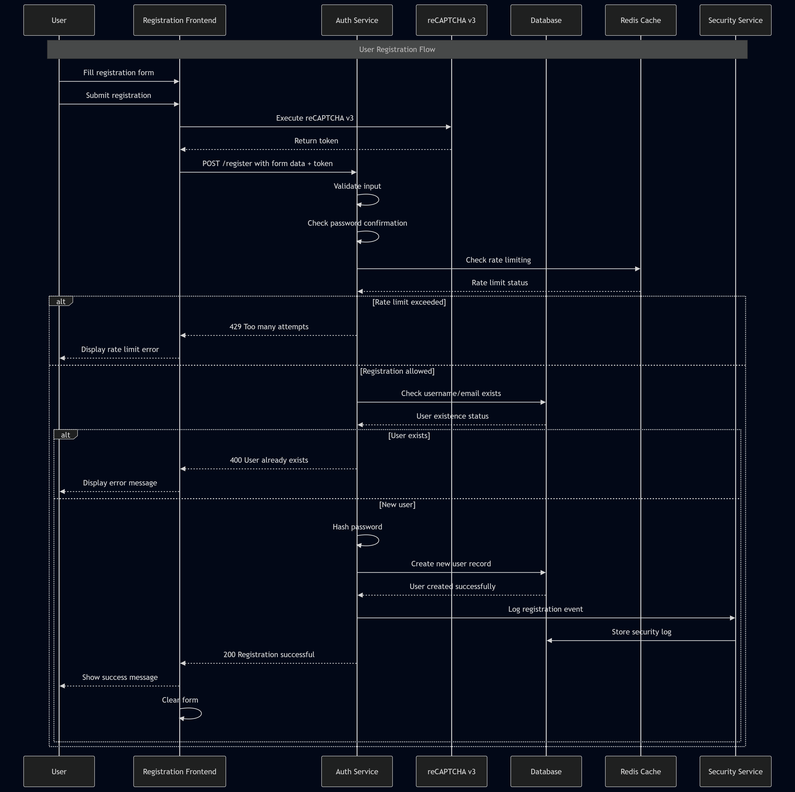

SnapTray szoftver dokument�ci�ja
Tartalomjegyz�k
- 1. Bevezet�s
- 2. Rendszer �ttekint�se
- 3. K�vetelm�nyek
- 4. Rendszerarchitekt�ra
- 5. Tervez�s
- 6. Megval�s�t�s
- 7. API referencia
- 8. Tesztel�s �s �rv�nyes�t�s
- 9. Felhaszn�l�i k�zik�nyv
- 10. Telep�t�s �s karbantart�s
- 11. K�vetkeztet�s �s j�vobeni munka
- 12. Hivatkoz�sok
- 13. Mell�kletek
1. Bevezet�s
A SnapTray egy webalapú menza-rendelőrendszer, amelynek célja, hogy egyszerűsítse az étkezési rendelések lebonyolítását iskolai környezetben. Fő célja, hogy a diákok, szülők és az étkeztető személyzet közötti interakció gyorsabbá és átláthatóbbá váljon az online rendelés, a valós idejű rendeléskövetés és a biztonságos fizetési lehetőségek révén.
A rendszer három fő felhasználói szerepet szolgál ki: a diákok böngészhetnek az étlapok között, rendelhetnek és kezelhetik a virtuális pénztárcájukat; a szülők figyelemmel kísérhetik gyermekeik rendeléseit és kezelhetik a fizetéseket; az adminisztrátorok számára dashboard biztosít lehetőséget az étlapok kezelésére és statisztikák elemzésére.
A SnapTray modern biztonsági megoldásokat alkalmaz (kétlépcsős azonosítás, email-ellenőrzés, gyakori webes támadások elleni védelem), valamint PayPal és Google Pay integrációt kínál.
2. Rendszer �ttekint�se
A rendszer egy webalapú rendelési és fizetési platform oktatási intézmények számára, kliens–szerver architektúrában. A backend Node.js alapú Express szerver, a frontend React komponensekből épül fel szerepkör-alapú dashboardokkal. Redis biztosítja a gyorsítótárazást, rate limitinget és az atomi műveleteket, MongoDB az adatok perzisztens tárolását.
Megvalósított fő funkciók
Felhasználókezelés és autentikáció:
- Többszerepkörű felhasználói rendszer (diák, szülő, adminisztrátor)
- Email alapú fiókellenőrzés és kétlépcsős azonosítás (2FA)
- JWT alapú munkamenet-kezelés Redis tárolással
- Jelszó biztonság bcrypt hasheléssel és erősség validációval
Rendelés és menü rendszer:
- Dinamikus menükezelés kategóriákkal és táplálkozási információkkal
- Valós idejű készletkövetés riasztásokkal
- Napi menü funkcionalitás, QR kód integráció, allergén információk
Fizetés feldolgozás:
- PayPal és Google Pay API integráció
- Pénztárca egyenleg rendszer atomi műveletekkel
- Biztonságos tranzakció naplózás és audit trail
3. K�vetelm�nyek
Fő célok
- Biztonságos és ellenőrzött rendelési folyamat
- Digitális pénztárca és hűségpont rendszer
- Skálázható és nagy teljesítményű backend
- Külső fizetési szolgáltatók integrálása (PayPal, Google Pay)
Felhasználókezelés: Regisztráció, email alapú fiókellenőrzés, szerepkör-alapú hozzáférés (diák, szülő, admin).
Hitelesítés és biztonság: JWT alapú hitelesítés, kétlépcsős azonosítás (2FA), rate limiting brute-force védelem ellen.
Rendelések és fizetések: Rendelés leadás, végösszeg számítás, PayPal és Google Pay támogatás, tranzakció naplózás.
Adminisztráció: Felhasználókezelés, statisztikák és riportok.
4. Rendszerarchitekt�ra
A rendszer három fő rétegből áll:
Megjelenítési réteg (Frontend): React.js komponensek, szerepkör-alapú dashboardok, Tailwind CSS, REST API kommunikáció, valós idejű frissítések Socket.IO-val.
Alkalmazási réteg (Backend): Node.js/Express.js szerver, JWT hitelesítés, üzleti logika szolgáltatásokban, Redis Lua szkriptek atomi műveletekhez, rate limiting middleware.
Adatréteg: MongoDB perzisztens adatbázis Mongoose ODM-mel, Redis cache munkamenetekhez és rate limitinghez.

4.1 Komponensek/modulok
| Modul | Leírás |
|---|---|
| Frontend/UI | React.js, szerepkör-alapú dashboardok, autentikáció, rendelés UI |
| API Layer | Express.js REST végpontok, üzleti logika |
| Data Layer | MongoDB (perzisztens), Redis (cache, session) |
| Auth & Security | JWT, rate limiting, security logging |
| Payment | PayPal és Google Pay integráció |
| Loyalty System | Pontszámítás, tier kezelés, kedvezmények |
4.2 Adatfolyam
- A felhasználó a React frontenddel interaktál, HTTP kéréseket küld.
- Az Express szerver middleware-eken (hitelesítés, rate limiting, sanitizáció) keresztül irányítja a kéréseket.
- Az üzleti logika MongoDB-ből vagy Redis cache-ből olvassa az adatokat.
- Írási műveletek frissítik az adatbázist és érvénytelenítik a cache bejegyzéseket.
- A válasz JSON formátumban kerül vissza a frontendhez.
- Valós idejű frissítések Redis pub/sub-on és Socket.IO-n keresztül érkeznek.
- Minden jelentős esemény naplózásra kerül a SecurityLogs kollekcióba.


4.3 Technol�gi�k
| Technológia | Indok |
|---|---|
| Node.js + Express.js | JavaScript full-stack konzisztencia, gyors fejlesztés |
| MongoDB + Mongoose | Rugalmas dokumentum-séma, skálázható |
| Redis + Lua | Gyors cache, atomi műveletek, rate limiting |
| React.js + Tailwind CSS | Komponens-alapú UI, reszponzív Tervez�s |
| JWT + bcrypt | Iparági standard hitelesítés és jelszóvédelem |
| PayPal / Google Pay | Megbízható, PCI-kompatibilis fizetési integrációk |
| Socket.IO | Kétirányú valós idejű kommunikáció |
| Helmet, HPP, CORS | HTTP biztonsági fejlécek és védelmi middleware |

5. Tervez�s
5.1 Tervez�s Principles
| Elv | Megvalósítás |
|---|---|
| Modularitás | Réteges architektúra (routes / services / models), laza csatolás modulok között |
| Security-First | Defense in depth, least privilege, minden végpont alapértelmezetten hitelesítést igényel |
| Skálázhatóság | Állapotmentes JWT, Redis cache, MongoDB indexek és connection pooling |
| Felhasználóközpontú Tervez�s | Reszponzív Tailwind UI, érthetetlen hibaüzenetek, visszajelzési rendszerek |
| Megbízhatóság | Graceful degradation, tranzakció-kezelés, átfogó naplózás |
| Karbantarthatóság | Clean code, git verziókövetés, RESTful API konvenciók, env-alapú konfiguráció |
| Adatintegritás | Többszintű validáció, atomi műveletek, audit trail |
| Platformfüggetlenség | Modern böngészők (Chrome, Firefox, Safari, Edge), mobilreszponzív |
5.2 Database Tervez�s
5.2.1 Cél, funkció és a tárolt információk összefoglalása
Ez az adatbázis egy iskolai menzarendszer része (MERN stack projekt), amely lehetővé teszi a felhasználók számára (diákok, szülők, tanárok), hogy ételeket rendeljenek, kifizessék azokat és értékeléseket adjanak. A rendszer támogatja a felhasználóhitelesítést, menükezelést, rendelések kezelését, fizetéseket, hűségprogramokat, E2EE chatet és biztonsági naplózást. A fő cél az iskolai étkezések hatékony és biztonságos kezelése, beleértve a készletgazdálkodást, értékeléseket és pénzügyi tranzakciókat. Az adatbázis MongoDB-t használ Mongoose ODM-mel, amely NoSQL adatbázis, de sémákkal struktúrált. Redis gyorsítótárazásra és ideiglenes adatokra szolgál.
Az adatbázis modell típusa: NoSQL (MongoDB), lekérdező nyelv: JavaScript (Mongoose query-k). Redis memóriában tárolt adatbázis gyorsítótárazásra, munkamenetekre és rövid életű adatokra.
5.2.2 Adatbázis terv és séma
Entitások és kapcsolatok (ER modell összefoglaló)
A rendszer fő entitásai és kapcsolataik:
- User (Felhasználó): Központi entitás, minden más ehhez kapcsolódik.
- UserPersonalInfo: Személyes adatok a felhasználóról (beágyazott dokumentum).
- MenuItems (Menüelemek): Ételválaszték elemei.
- Order (Rendelés): Felhasználói rendelések.
- OrderItems (Rendelési tételek): Menüelemek egy rendeléshez (beágyazott a Rendelésben).
- Payment (Fizetés): Pénzügyi tranzakciók.
- Review (Értékelés): Menüelemek értékelései (beágyazott a MenuItems-ben).
- DailyMenu (Napi menü): Iskolai időszakokra bontott napi menük, több Menüelem halmazzal (N:N kapcsolat linktáblával).
- ParentStudent (Szülő-diák kapcsolat): Szülők és diákok összekapcsolása.
- SecurityLogs (Biztonsági naplók): Eseménynaplózás.
- UserLoyalty (Hűségprogram): Felhasználói pontok, kedvezmények és hűségszint.
- DeviceSyncSession (Eszköz szinkronizációs munkamenet): Eszközkulcs-szinkronizáció (önálló, nincs kapcsolva másokhoz).
- Message (Üzenetek): E2EE chat üzenetek.
- PreKey (Prekeyek): ECDH prekeyek.
- StorageBlob (Tárhely blob): Titkosított üzenet/munkamenet előzmények.
Relationships:
- User 1:N Payment, Order, SecurityLogs, UserLoyalty, Message (sender/recipient), PreKey, StorageBlob, ParentStudent (as parent or student).
- MenuItems 1:N OrderItems (embedded in Order), Review (embedded).
- Order 1:N OrderItems (embedded).
- DailyMenu N:M MenuItems (linking table: DailyMenuMenuItems).
- Message 1:1 PreKey (optional, for X3DH).
- StorageBlob 1:1 User (per blobType and partitionKey).
- DeviceSyncSession: standalone, not connected to others.

Relational Schema (Table Details)
Az alábbiak részletezik az egyes entitások mezőit. A DailyMenu és MenuItems N:M kapcsolat esetén egy linktábla is ábrázolható.
Example: DailyMenu and MenuItems Relationship (dbdiagram.io style)
Table DailyMenu {
_id objectid [pk]
date date
schoolPeriod varchar
createdAt datetime
}
Table MenuItems {
_id objectid [pk]
name varchar
// ...additional fields
}
Table DailyMenuMenuItems {
dailyMenuId objectid [ref: > DailyMenu._id]
menuItemId objectid [ref: > MenuItems._id]
// Composite PK: [dailyMenuId, menuItemId]
}

DeviceSyncSession
Ez a táblázat önállóan működik, más táblákhoz nem kapcsolódik, és csak eszközazonosítókat és titkosított adatokat tárol. Ez megfelel a céljának, mert rövid életű, munkamenet jellegű adatokat kezel.
5.2.3 Detailed Entity Descriptions
(A k�vetkezok r�szletezik az egyes entit�sok mezoit, t�pusait, jelent�s�t, megszor�t�sait, indexeit �s �zleti szab�lyait. L�sd az eredeti dokument�ci� folytat�s�t.)
User (Users)
| Field Name | Type | Meaning/Role | Constraints | Indexes |
|---|---|---|---|---|
| username | String | Username | Required, unique | _id, username |
| password | String | Password (hashed) | Required | _id, password |
| String | Email address | Required, unique, email format, trim | _id, email | |
| isVerified | Boolean | Email verification status | Default: false | _id, isVerified |
| usertype | String | User type (admin, student, parent, teacher, frozen, editor) | Enum: ['admin', 'student', 'parent', 'teacher', 'frozen', 'editor'], default: 'student' | _id, usertype |
| createdAt | Date | Account creation date | Default: current time | _id, createdAt |
| balance | Number | User balance for in-app purchases | Default: 0 | _id, balance |
| isBanned | Boolean | Banned user | Default: false | _id, isBanned |
| banReason | String | Ban reason | Optional | _id, banReason |
| userPersonalInfo | [Subdocument] | Personal info (name, birth date, class, school, address) | Optional | _id, userPersonalInfo |
| identity.publicKey | String | E2EE identity public key (ECDH P-256 SPKI base64) | Optional | _id, identity.publicKey |
| identity.signingPublicKey | String | E2EE signing public key (ECDSA P-256) | Optional | _id, identity.signingPublicKey |
| identity.keyId | String | Key identifier (SHA-256 fingerprint) | Optional | _id, identity.keyId |
| identity.registeredAt | Date | E2EE registration time | Optional | _id, identity.registeredAt |
| identity.isE2EEEnabled | Boolean | E2EE enabled | Default: false | _id, identity.isE2EEEnabled |
| devices | [Array] | Registered devices (deviceId, publicKey, label, etc.) | Optional | _id, devices |
| recoveryBlob.encryptedData | String | Recovery blob (AES-GCM encrypted) | Optional | _id, recoveryBlob.encryptedData |
| recoveryBlob.iv | String | IV for recovery blob | Optional | _id, recoveryBlob.iv |
| recoveryBlob.salt | String | Salt for recovery blob | Optional | _id, recoveryBlob.salt |
| recoveryBlob.storedAt | Date | Recovery blob storage time | Optional | _id, recoveryBlob.storedAt |
| encryption.* | Mixed | V1 legacy E2EE fields (for migration) | Optional | _id, encryption.* |
Üzleti szabályok: Minden felhasználó egyedi felhasználónévvel és e-mail címmel rendelkezik. A felhasználói típus befolyásolja a jogosultságokat (pl. admin mindent elér).
Fizetés (Payments)
| Field Name | Type | Meaning/Role | Constraints | Indexes |
|---|---|---|---|---|
| userId | ObjectId (ref: User) | Paying user | Optional | _id, userId |
| amount | Number | Paid amount | Required | _id, amount |
| currency | String | Currency (e.g., USD, HUF) | Required | _id, currency |
| paymentMethod | String | Payment method | Required | _id, paymentMethod |
| status | String | Status (Completed, Pending, Failed) | Required, enum: ['Completed', 'Pending', 'Failed'] | _id, status |
| transactionId | String | External transaction reference | Optional | _id, transactionId |
| createdAt | Date | Creation time | Default: current time | _id, createdAt |
Üzleti szabályok: Minden fizetés egy felhasználóhoz tartozik, de lehet opcionális (például vendégfizetések).
Menüelemek (Menu Items)
| Field Name | Type | Meaning/Role | Constraints | Indexes |
|---|---|---|---|---|
| name | String | Menu item name | Required | _id, name |
| description | String | Description | Required | _id, description |
| stock | Number | Stock quantity | Required, default: 0 | _id, stock |
| price | Number | Price | Required | _id, price |
| category | String | Category (Soup, Salad, etc.) | Required, enum: ['Soup', 'Salad', 'MainDish', 'SideDish', 'Snack', 'Dessert', 'Drink', 'Healthy', 'SpecialDiet', 'DailySpecial', 'Other'], default: 'Other' | _id, category |
| available | Boolean | Availability | Default: true | _id, available |
| QRCode | String | QR code for menu item | Optional | _id, QRCode |
| allergens | [String] | Allergen list | Default: [] | _id, allergens |
| nutritionalInfo.calories | Number | Calories | Optional | _id, nutritionalInfo.calories |
| nutritionalInfo.protein | Number | Protein | Optional | _id, nutritionalInfo.protein |
| nutritionalInfo.carbs | Number | Carbohydrates | Optional | _id, nutritionalInfo.carbs |
| nutritionalInfo.fat | Number | Fat | Optional | _id, nutritionalInfo.fat |
Üzleti szabályok: A készlet nem lehet negatív; kategóriák szerint szűrhető. Elő mentési hook: ha stock <= 0, available = false, egyébként true.
Rendelés (Orders)
| Field Name | Type | Meaning/Role | Constraints | Indexes |
|---|---|---|---|---|
| userId | ObjectId (ref: User) | Ordering user | Required | _id, userId |
| items | [OrderItemsScheme] | Order items | Required | _id, items |
| orderDate | Date | Order date | Default: current time | _id, orderDate |
| status | String | Status (Pending, InProgress, Completed, Cancelled) | Required, enum: ['Pending', 'InProgress', 'Completed', 'Cancelled'], default: 'Pending' | _id, status |
| totalAmount | Number | Total amount | Required | _id, totalAmount |
| pickupTime | Date | Pickup time | Optional | _id, pickupTime |
| notes | String | Notes | Optional, default: '' | _id, notes |
| paypalOrderId | String | PayPal order ID | Optional | _id, paypalOrderId |
| paymentMethod | String | Payment method | Optional | _id, paymentMethod |
| transactionId | String | Transaction ID | Optional | _id, transactionId |
| publicID | String | Public ID | Required, unique | _id, publicID |
Üzleti szabályok: Minden rendelés egy felhasználóhoz tartozik; az állapotváltozások az üzleti logikát követik. Elő mentési hook: ha a rendelés Pending és több mint 15 perc eltelt, automatikusan Cancelled lesz.
OrderItems (Order Items)
| Field Name | Type | Meaning/Role | Constraints | Indexes |
|---|---|---|---|---|
| menuItemId | ObjectId (ref: MenuItems) | Menu item ID | Required | _id, menuItemId |
| orderId | ObjectId (ref: Order) | Order ID | Optional | _id, orderId |
| quantity | Number | Quantity | Required, default: 1 | _id, quantity |
Üzleti szabályok: Minden tételhez egy menüelem tartozik; a mennyiség pozitív egész szám. Ez a séma beágyazva van a Rendelés (Order) séma tételei mezőjébe.
Review (Reviews) - Embedded in MenuItems
| Field Name | Type | Meaning/Role | Constraints | Indexes |
|---|---|---|---|---|
| userId | ObjectId (ref: User) | Reviewing user | Optional | _id, userId |
| rating | Number | Rating (1-5) | Required, min: 1, max: 5 | _id, rating |
| comment | String | Comment | Required, maxlength: 500 | _id, comment |
| date | Date | Creation time | Default: current time | _id, date |
| ipAddress | String | IP address | Optional | _id, ipAddress |
| reported | Boolean | Reported | Default: false | _id, reported |
| moderated | Boolean | Moderated | Default: false | _id, moderated |
| moderatorNotes | String | Moderator notes | Optional | _id, moderatorNotes |
Üzleti szabályok: Az értékelések a MenuItems gyűjteményben beágyazottan tárolódnak. A felhasználó különböző tételeket is többször értékelhet.
DailyMenu (Daily Menu)
| Field Name | Type | Meaning/Role | Constraints | Indexes |
|---|---|---|---|---|
| date | Date | Date | Required | _id, date |
| schoolPeriod | String | School period (morning, afternoon) | Required, enum: ['morning', 'afternoon'] | _id, schoolPeriod |
| menuItems | [ObjectId] (ref: MenuItems) | Item list | Required | _id, menuItems |
| createdAt | Date | Creation time | Default: current time | _id, createdAt |
�zleti szab�lyok: Daily menus are created per period.
ParentStudent (Parent-Student Relationship)
| Field Name | Type | Meaning/Role | Constraints | Indexes |
|---|---|---|---|---|
| parentId | ObjectId (ref: User) | Parent user | Required | _id, parentId |
| studentId | ObjectId (ref: User) | Student user | Required | _id, studentId |
| createdAt | Date | Creation time | Default: current time | _id, createdAt |
�zleti szab�lyok: Parents can be linked to multiple students.
SecurityLogs (Security Logs)
| Field Name | Type | Meaning/Role | Constraints | Indexes |
|---|---|---|---|---|
| userId | ObjectId (ref: User) | User | Optional | _id, userId |
| action | String | Action (e.g., LOGIN_SUCCESS) | Required | _id, action |
| type | String | Type (INFO, WARNING, ERROR) | Required | _id, type |
| ipAddress | String | IP address (hashed) | Optional | _id, ipAddress |
| Timestamp | Date | Timestamp | Default: current time | _id, Timestamp |
| details | String | Additional info | Optional | _id, details |
| country | String | Country | Optional | _id, country |
| CountryCode | String | Country code | Optional | _id, CountryCode |
| currency | String | Currency | Optional | _id, currency |
| Continent | String | Continent | Optional | _id, Continent |
| IsVPN | Boolean | VPN usage | Optional | _id, isVPN |
| isTor | Boolean | Tor usage | Optional | _id, isTor |
| isProxy | Boolean | Proxy usage | Optional | _id, isProxy |
�zleti szab�lyok: Logs record all important events.
DeviceSyncSession (Device Sync Session)
| Field Name | Type | Meaning/Role | Constraints | Indexes |
|---|---|---|---|---|
| responderDeviceId | String | Responder device ID | Required | responderDeviceId |
| initiatorDeviceId | String | Initiator device ID | Optional | _id |
| encryptedPayload | String | Encrypted payload | Required | _id |
| iv | String | Initialization vector | Required | _id |
| ephemeralKey | String | Ephemeral key | Required | _id |
| expiresAt | Date | Expiration time | Default: current time + 10 minutes | expiresAt (TTL) |
Üzleti szabályok: Rövid életű munkamenet az eszközök közötti titkosítási kulcsok szinkronizálására. TTL index segítségével 10 perc után automatikusan törlődik. Az E2EE kulcskezelésben biztonságos párosítást tesz lehetővé.
Üzenet (Messages)
| Field Name | Type | Meaning/Role | Constraints | Indexes |
|---|---|---|---|---|
| senderId | ObjectId (ref: User) | Sender user ID | Required | senderId, recipientId, createdAt |
| recipientId | ObjectId (ref: User) | Recipient user ID | Required | recipientId, status |
| senderDeviceId | String | Sender device ID | Optional | recipientDeviceId, status |
| recipientDeviceId | String | Recipient device ID | Optional | _id |
| schemaVersion | Number | Schema version | Default: 2 | _id |
| header.dh | String | Sender ratchet public key | Optional | _id |
| header.n | Number | Message number in chain | Optional | _id |
| header.pn | Number | Previous chain message count | Optional | _id |
| x3dhHeader.identityKey | String | Identity key for X3DH | Optional | _id |
| x3dhHeader.ephemeralKey | String | Ephemeral key for X3DH | Optional | _id |
| x3dhHeader.spkKeyId | String | Signed prekey ID | Optional | _id |
| x3dhHeader.opkKeyId | Mixed | One-time prekey ID | Optional | _id |
| x3dhHeader.recipientDeviceId | String | Recipient device for X3DH | Optional | _id |
| ciphertext | String | Encrypted message content | Optional | _id |
| iv | String | GCM IV | Optional | _id |
| encryptedContent | String | Legacy encrypted content | Optional | _id |
| encryptionMetadata.senderEncryptedKey | String | Legacy sender key | Optional | _id |
| encryptionMetadata.recipientEncryptedKey | String | Legacy recipient key | Optional | _id |
| encryptionMetadata.iv | String | Legacy IV | Optional | _id |
| encryptionMetadata.algorithm | String | Encryption algorithm | Default: 'AES-GCM' | _id |
| status | String | Message status | Enum: ['sent', 'delivered', 'read', 'replaced'], default: 'sent' | status |
| messageType | String | Message type | Enum: ['text', 'file', 'image'], default: 'text' | _id |
| createdAt | Date | Creation time | Default: current time | createdAt |
| readAt | Date | Read time | Optional | _id |
| senderKeyRecovery.needed | Boolean | Key recovery needed | Default: false | senderKeyRecovery.needed |
| senderKeyRecovery.failed | Boolean | Key recovery failed | Default: false | _id |
| senderKeyRecovery.senderPublicKey | String | Recovery public key | Optional | _id |
| senderKeyRecovery.senderKeyId | String | Recovery key ID | Optional | _id |
Üzleti szabályok: End-to-end titkosított üzeneteket tárol Double Ratchet protokollal. Tartalmazza az X3DH fejlécet kezdeti kulcscsere céljából. Az állapotkövetés figyeli a kézbesítést és olvasást. Támogatja a kapott kulcsok helyreállítását. A migráció érdekében régi mezők is megmaradnak. Az indexek optimalizáltak a beszélgetések lekérésére és állapotszűrésre.
PreKey (Prekeys)
| Field Name | Type | Meaning/Role | Constraints | Indexes |
|---|---|---|---|---|
| userId | ObjectId (ref: User) | User ID | Required | userId, deviceId, used |
| deviceId | String | Device ID | Required | userId, keyId (unique) |
| keyId | Number | Key ID | Required | _id |
| publicKey | String | ECDH public key | Required | _id |
| used | Boolean | Whether key has been used | Default: false | used |
| createdAt | Date | Creation time | Default: current time | _id |
Üzleti szabályok: Egyszer használatos prekey-ek (OPK-k) tárolása X3DH kulcscsere céljára E2EE üzenetküldésre. Minden kulcs egyszer használatos és megjelöltként kerül tárolásra. Egyedi keyId felhasználónként biztosítja a duplikációmentességet. Magas forgalmú gyűjtemény, a kulcsok használat után törlésre kerülnek a forward secrecy megtartása érdekében.
StorageBlob (Storage Blobs)
| Field Name | Type | Meaning/Role | Constraints | Indexes |
|---|---|---|---|---|
| userId | ObjectId (ref: User) | User ID | Required | userId, blobType, partitionKey (unique) |
| blobType | String | Blob type | Required, enum: ['message_log', 'session_state', 'skipped_keys'] | blobType |
| partitionKey | String | Partition key (e.g., conversation ID) | Required | partitionKey |
| encryptedPayload | String | Encrypted data | Required | _id |
| iv | String | GCM IV | Required | _id |
| version | Number | Version number | Default: 1 | _id |
| updatedAt | Date | Last update time | Default: current time | updatedAt |
Üzleti szabályok: Titkosított tárolás E2EE kapcsolódó adatoknak, beleértve az üzenetnaplókat, munkamenet állapotokat és kihagyott üzenetkulcsokat. Felhasználó, típus és kulcs szerint particionált a hatékony hozzáférés érdekében. Egyedi korlátozások megakadályozzák az adatok felülírását. Állandó kriptográfiai állapot tárolására szolgál a munkamenetek között.
5.2.4 Fizikai és logikai szerkezet
Az adatbázis MongoDB-t használ elsődleges NoSQL tárolóként Mongoose séma érvényesítéssel. A kollekciók dokumentumalapú tárolásra vannak tervezve, beágyazott al-dokumentumokkal a kapcsolódó adatokhoz (pl. OrderItems az Order-ben, Reviews a MenuItems-ben). A kapcsolatokhoz ObjectId hivatkozásokat használunk. A Redis rövid életű adatok, például munkamenetek, rate limiting és gyorsítótárazás kezelésére szolgál.
A logikai szerkezet az ER-modellt követi: entitások kollekciókban, kapcsolatok hivatkozások és beágyazás révén. A fizikai szerkezet teljesítményhez optimalizált indexeket, ideiglenes adatokhoz TTL-t és gyorsítótár-érvénytelenítéshez change stream-eket tartalmaz.
5.2.5 Használati esetek
- Felhasználói regisztráció és hitelesítés szerepkör-alapú hozzáféréssel.
- Menü böngészése, rendelésleadás és fizetés feldolgozása.
- Hűségpont felhalmozás és kedvezmény alkalmazása.
- E2EE üzenetküldés kulcskezeléssel.
- Biztonsági megfigyelés és auditnaplózás.
- Készletgazdálkodás és készletfrissítések.
- Szülő-diák fiók összekapcsolása felügyelet céljából.
5.2.6 Security and Access
- Authentication via JWT, passwords hashed with bcrypt.
- Role-based permissions (admin, student, etc.).
- IP hashing for GDPR compliance.
- Encrypted blobs for sensitive data.
- Rate limiting to prevent abuse.
- Audit logs for all security events.
5.2.7 Maintenance and Operations
- Regular index maintenance and monitoring.
- Backup strategies for MongoDB and Redis.
- Data migration for schema updates.
- Performance tuning based on query analysis.
- Cleanup of expired sessions and logs.
5.2.8 E2EE chat és üzenetkezelés
A rendszer Double Ratchet protokollt és X3DH kulcscserét használ a végpontok közötti titkosított üzenetküldéshez. Az üzenetek titkosítva tárolódnak, a ratchet metaadat előretitkosságot biztosít. A prekey-ek és storage blob-ok kezelik a kulcselosztást és a munkamenet állapotát.
5.2.9 Kódalap leképezése (dokumentációs kiterjesztés)
Ez a szakasz kiegészíti a fent leírt adatbázisséma leírást közvetlen hivatkozásokkal a megvalósító kódokra és a rendszer működési helyeire.
Fő MongoDB modellek és helyek
src/models/User.js:Userand sub-schemas (userPersonalInfo,identity,devices,recoveryBlob,encryption).config/database_queries.js:Payment,MenuItems,Order,OrderItems,DailyMenu,ParentStudent,SecurityLogs,UserLoyalty,Reward,Redemption,MoneyRequestand regular indexes + pre-save hooks.src/models/DeviceSyncSession.js:DeviceSyncSession, TTL indexexpiresAt.src/models/Message.js:Message(E2EE metadata, state-tracking, indexes, markAsRead helper).src/models/PreKey.js:PreKey(X3DH keys,userId/deviceIdindexes andkeyIduniqueness).src/models/StorageBlob.js:StorageBlob(saved encrypted session data,userId/blobType/partitionKeyunique index).
Adatműveletek és szolgáltatási réteg
src/api.js: Központi REST végpontok, amelyekben a rendelés- és fizetésfolyamatok valamint az e-mailkezelés történik./api/ordersCRUD + PayPal/Google Pay + egyenleg alapú fizetés +save-orderfeladat.orderService,paypalService,googlePayServiceimportok,validateOrderInputésvalidatePaymentInputmiddleware.
src/Orders/Order.jséssrc/LoyaltySystem/*: Eszközök rendelésfeldolgozáshoz,UserLoyaltypontfrissítéshez, lojalitáspont számításhoz.src/auth/*.js: Felhasználói hitelesítési események (register.js,login.js,2fa.js,password_reset.js,email_verification.js),SecurityLogshasználat.- Bejelentkezéskor
SecurityLogsrögzítése ésUser.lastActivefrissítése.
- Bejelentkezéskor
src/services/*: Logika az adatbázis transzparens frissítéseihez, pontos számításokhoz (kedvezmények, kuponok, jutalmak).
Adatbázis integráció és indítási lépések
.envváltozók betöltése (pl.MONGODB_URI,DB_NAME) különféle helyeken (src/models/User.js,config/database_queries.js).- Kezdeti
mongoose.connectkötés két fő komponensben (felhasználói hitelesítés és adatbázis lekérdezés csomagoló). - A modellek
module.exports-e más modulokba importálva (src/api.js,src/auth/login.js,src/dashboard/...). - Redis kapcsolódás a
src/redis.jséssrc/cache/*rétegben (rate limit, cache, Change Stream Manager, KeyRegistry).
Főbb funkciók és adatfolyamok a fő modulokban
- Rendelés beküldése:
src/api.js->orderService.validateOrderStock->orderService.convertCartToDbFormat->Order.create/Order.save=>UserLoyalty.updatePointsAtomically(mentés) ->SecurityLogshívás. - Címzett és szülő-diák kapcsolatok:
ParentStudentséma, adminisztráció és hozzáféréssrc/dashboard/*éssrc/models/User.jsszerintuserPersonalInfokapcsolaton keresztül. - E2EE üzenetek:
src/models/Message.jséssrc/models/PreKey.js+src/models/StorageBlob.js+src/LoyaltySystem(további konzisztencia, audit) + frontendsrc/chat/**.
Security and Maintainability Notes
- Passwords:
bcryptinsrc/auth/passwordhash.jssummarizes (hash + compare). - Logging: All important operations (
SecurityLogs) insrc/auth/login.js,src/auth/register.js,src/api.jsendpoints occur.

5.3 Algoritmusok �s adatstrukt�r�k
5.3.1 Data Structures
- MongoDB Collections: BSON dokumentumok, beágyazott dokumentumokkal (OrderItems az Order-ben), ObjectId referenciákkal és tömbökkel (allergének, napi menü tételek).
- Redis Strings/Hashes: Session tárolás, cached user adatok, komplex dashboard objektumok.
- Redis Sorted Sets: Sliding window rate limiting, timestamp alapú score-okkal.
- JavaScript: Objektumok API válaszokhoz, tömbök cart és batch műveletekhez, Map/Set cache lookupokhoz.
5.3.2 Core Algorithms
Password Hashing (bcrypt):
const hashedPassword = await bcrypt.hash(password, 12);
const isValid = await bcrypt.compare(password, hashedPassword);
JWT Token Generation (HS256):
const token = jwt.sign(payload, secretKey, { expiresIn: '24h' });
const decoded = jwt.verify(token, secretKey);
IP Hashing (SHA-256, GDPR compliance):
const hashedIP = crypto.createHash('sha256').update(ipAddress).digest('hex');
Loyalty Point Calculation:
function ConvertPoints(dollarAmount, tier, healthLevel, date) {
let total = 0;
for (let i = 0; i < Math.floor(dollarAmount); i++) {
total += Math.floor(Math.random() * 6) + 4; // 4–9 points per dollar
}
if (isHoliday(date)) total *= 1.5;
else if (isHolidaySeason(date)) total *= 1.2;
total *= 1 + (healthLevel * 0.2);
const tierBonus = DISCOUNT_RATES[tier] || 0;
total *= 1 + tierBonus;
return Math.floor(total);
}
Tier Determination:
const determineTier = (totalPoints) => {
if (totalPoints >= 20000) return 'PLATINUM';
if (totalPoints >= 8000) return 'GOLD';
if (totalPoints >= 2500) return 'SILVER';
if (totalPoints >= 1200) return 'BRONZE';
return 'NONE';
};
Menu Item Filtering:
const filterMenuItems = (items, filters) =>
items.filter(item =>
(!filters.category || item.category === filters.category) &&
(!filters.priceRange || isInRange(item.price, filters.priceRange)) &&
(!filters.allergens || !hasAllergens(item, filters.allergens)) &&
(!filters.searchTerm || item.name.toLowerCase().includes(filters.searchTerm.toLowerCase()))
);
Csúszó ablakos rate limiting (Redis Lua):
local key = KEYS[1]
local window = tonumber(ARGV[1])
local max_requests = tonumber(ARGV[2])
local now = tonumber(ARGV[3])
redis.call('ZREMRANGEBYSCORE', key, 0, now - window)
local current_count = redis.call('ZCARD', key)
if current_count >= max_requests then
return {0, current_count}
end
redis.call('ZADD', key, now, now)
redis.call('EXPIRE', key, window)
return {1, current_count + 1}
Atomi pénztárca-frissítés (Redis Lua):
local current_balance = tonumber(redis.call('GET', KEYS[1]) or '0')
local new_balance = current_balance + tonumber(ARGV[1])
if new_balance < 0 then
return redis.error_reply('INSUFFICIENT_FUNDS')
end
redis.call('SET', KEYS[1], new_balance)
return new_balance
reCAPTCHA ellenőrzés:
const verifyRecaptcha = async (token) => {
const result = await fetch('https://www.google.com/recaptcha/api/siteverify', {
method: 'POST',
body: new URLSearchParams({ secret: process.env.RECAPTCHA_SECRET, response: token })
}).then(r => r.json());
return result.score >= 0.5; // 0.0 = bot, 1.0 = ember
};
5.3.3 Performance Optimization
- Database indexes: Compound indexes on frequently queried fields (e.g.,
{ email: 1, isVerified: 1 },{ userId: 1, orderDate: -1 }). - Lapozás: Skip-limit stratégia teljes halmazszámmal nagy adatkészletekhez.
- Batch processing:
bulkWritefor multi-record updates. - Cache middleware: Redis cache-first, fallback to MongoDB, with pattern-based invalidation on writes.
5.4 Security Tervez�s
5.4.1 Security Funkci�k
| Feature | Details |
|---|---|
| Authentication | JWT (HS256), role-based access control (RBAC) |
| Password storage | bcrypt, 10–12 salt rounds |
| 2FA | Implemented; full integration in progress |
| Rate limiting | express-rate-limit (general) + Redis Lua sliding window (admin/dashboard) |
| Input validation | Client-side, server-side, database-level; express-validator, Mongoose schemas |
| XSS / injection | xss-clean, helmet, express-mongo-sanitize |
| CSRF | Partial — tokens planned for all state-changing operations |
| CORS | Strict policy; only official frontend domain allowed |
| Security headers | Helmet.js (CSP, HSTS, etc.), no eval(), nonce-based inline scripts |
| IP hashing | SHA-256 before storage in SecurityLogs (GDPR Art. 32) |
| reCAPTCHA | Google reCAPTCHA v3 on registration and login |
| Geolocation | iplocate.io for VPN/Proxy/Tor detection and risk scoring |
| Payment security | PayPal/Google Pay PCI-compliant gateways |
| Environment secrets | All credentials in .env, never in version control |
5.4.2 Threat Modeling
Identified Threats
- Authentication Bypass: Brute force attacks, credential stuffing, JWT token theft.
- Data Injection: SQL/NoSQL injection, XSS, CSRF attacks.
- Denial of Service: Rate limiting bypass, resource exhaustion.
- Data Breach: Unauthorized access to user data, payment information.
- E2EE kompromittálás: gyenge kulcscsere, közbeékelt támadások a chaten.
- Insider Threats: Admin privilege abuse, data exfiltration.
Mitigation Strategies
- Multi-layered authentication with reCAPTCHA and geolocation risk scoring.
- Comprehensive input sanitization and parameterized queries.
- Distributed rate limiting with Redis to prevent DoS.
- Encryption at rest and in transit (HTTPS, E2EE for chat).
- Least privilege access and audit logging for all actions.
- Regular security audits and dependency vulnerability scanning.
5.4.3 Incident Response Plan
- Detection: Automated monitoring via SecurityLogs, rate limit alerts, and anomaly detection.
- Assessment: Incident severity classification (low/medium/high) based on data exposure and system impact.
- Containment: Immediate isolation of affected systems, token revocation, account lockdowns.
- Eradication: Root cause analysis, patch deployment, key rotation for E2EE.
- Recovery: System restoration from backups, user notification, service resumption.
- Lessons Learned: Post-incident review, documentation updates, preventive measures.
5.4.4 Compliance and Privacy
- GDPR Compliance: Data minimization, consent management, right to erasure, IP hashing for anonymization.
- PCI DSS: Payment data never stored locally; all transactions via certified gateways.
- Data Retention: SecurityLogs retained for 2 years, user data until account deletion.
- Privacy by Tervez�s: Default encryption, access controls, and audit trails.
5.4.5 Biztonsági tesztelés
- Automatizált tesztcsomagok hitelesítési folyamatokhoz, bemenet-szűréshez és rate limitinghez.
- Rendszeres manuális penetrációs tesztelés az automata eszközökkel nem észlelt sebezhetőségek feltárására.
- Függőségek vizsgálata
npm audités Snyk integráció segítségével. - OWASP ZAP a dinamikus alkalmazásbiztonsági teszteléshez.


6. Megval�s�t�s
6.1 K�nyvt�rszerkezet
├── config/
│ ├── DATABASE_CONSTANTS.JS
│ ├── database_queries.js
│ └── hu.json
├── data/
│ ├── disposable_email_list.json
│ ├── Most_used_passwords.json
│ └── database_test/
├── docs/
├── public/
│ ├── chat/
│ ├── dashboard/
│ │ ├── admin/
│ │ ├── editor/
│ │ ├── parent/
│ │ └── student/
│ └── Order/
├── src/
│ ├── main.js
│ ├── auth/
│ │ ├── 2fa.js
│ │ ├── login.js
│ │ ├── register.js
│ │ ├── password_reset.js
│ │ └── validation.js
│ ├── cache/
│ │ ├── ChangeStreamManager.js
│ │ └── KeyRegistry.js
│ ├── dashboard/
│ ├── LoyaltySystem/
│ │ └── loyalty-service.js
│ ├── models/
│ ├── Orders/
│ ├── payments/
│ └── services/
└── tests/
└── performance_tests/
6.2 Backend Megval�s�t�s
6.2.1 Technology Stack
Node.js + Express.js, MongoDB + Mongoose, Redis + Lua scripting, JWT, bcrypt, PayPal & Google Pay APIs, Socket.IO.
6.2.2 Main Application Structure
src/main.js: Entry point — sets up Express, middleware (Helmet, CORS, session, rate limiting), and mounts all routers.- Routers: Modularized by domain (
auth,dashboard,orders,payments,chat). - Models: Mongoose schemas in
src/models/. - Services: Business logic isolated in service modules (
loyalty-service.js,paypal-service.js,cache-service.js, etc.).
6.2.3 Authentication & Security
A regisztráció érvényesíti a bemenetet, ellenőrzi a reCAPTCHA-t, bcrypttel hash-eli a jelszót, küld egy e-mailes ellenőrzőkódot, és naplózza az eseményt. A bejelentkezés ellenőrzi a hitelesítő adatokat, JWT-t ad ki, naplózza az IP/hely alapú kockázatot és IP-nként rate limitinget alkalmaz.
// Registration snippet — src/auth/register.js
const hashedPassword = await bcrypt.hash(password, 10);
const user = new User({ username, password: hashedPassword, email });
await user.save();
await createSecurityLog('USER_REGISTER', { username, email }, clientIp);
res.status(200).json({ message: 'Registration successful! Please check your email for verification.' });
6.2.4 Order & Payment Processing
A rendelési folyamat érvényesíti a kosarat a valós készlet alapján, létrehoz egy függőben lévő rendelést MongoDB-ben, meghívja a PayPal vagy Google Pay API-t, majd foglaláskor megerősíti a fizetést, levonja a készletet, jóváírja a hűségpontokat és naplózza a tranzakciót.
// Order creation — src/api.js
router.post('/orders', async (req, res) => {
// validate user & stock...
const { jsonResponse, httpStatusCode } = await paypalService.createOrder(cart, currency, amount);
// save order to DB...
res.status(httpStatusCode).json(jsonResponse);
});
6.2.5 Gyorsítótárazás és teljesítmény
A Redis az alkalmazás teljes területén az elsődleges gyorsítótárazási réteg, al-másodperces válaszidőt biztosítva gyakran lekérdezett adatok esetén, és lehetővé téve összetett atomi műveleteket Lua szkripteléssel. A rendszer többrétegű gyorsítótárazási stratégiát valósít meg, mely Redis-t és MongoDB változásfolyamokat (change stream) használ a gyorsítótár érvénytelenítésére.
Redis használata az oldalon
- Munkamenet-kezelés: A felhasználói munkamenetek Redisben tárolódnak automatikus lejárattal (TTL), lehetővé téve a backend állapotmentes vízszintes skálázását. A munkamenetek tartalmazzák a felhasználó azonosítóját, szerepkört és ideiglenes tokeneket.
- Irányítópult adatgyorsítótárazása: Admin és felhasználói irányítópult statisztikák (felhasználó-szám, rendelés összeg, menüpont elérhetősége) 5-10 percig vannak gyorsítótárazva, hogy csökkentsék az adatbázis terhelését csúcsidőben.
- Menüpont gyorsítótár: A napi menü és elérhető tételek gyorsítótárazva vannak változásfolyam érvénytelenítéssel, amikor a készletszintek változnak vagy új tételek kerülnek hozzáadásra.
- Rate limit tároló: Az általános API rate limitek és az admin-specifikus csúszó ablakos limitek Redis-t használnak háttértárolóként az elosztott érvényesítéshez.
- Hűségpont gyorsítótár: A felhasználói hűségadatok (pontok, szint, kedvezmények) rövid ideig vannak gyorsítótárazva, hogy elkerüljük a többszöri számítást az irányítópult betöltésekor.
- Biztonsági naplók összegzése: A legutóbbi biztonsági események gyorsítótárazva vannak az admin gyors hozzáférése érdekében, időnkénti frissítéssel MongoDB-ból.
- Fizetési munkamenet gyorsítótár: Ideiglenes fizetési szándékok és PayPal/Google Pay munkamenet adatok Redisben tárolódnak a tranzakció feldolgozása során.
Gyorsítótár-érvénytelenítési stratégia
A rendszer MongoDB változásfolyamokat (src/cache/ChangeStreamManager.js) használ az adatbázis írási műveleteinek figyelésére, és automatikusan érvényteleníti a kapcsolódó Redis kulcsokat. Például:
- A menüelemek frissítései érvénytelenítik a menü gyorsítótár kulcsait.
- A felhasználói egyenleg változásai érvénytelenítik a hűség- és irányítópult gyorsítótárakat.
- Az új rendelések érvénytelenítik a statisztika gyorsítótárakat.
Teljesítmény optimalizálás
- Kapcsolat poolozás: Redis kapcsolatok poolozva és újrahasznosítva vannak a terhelés minimalizálása érdekében.
- Kulcsnév konvenció: Strukturált kulcsok (pl.
menu:items:category:soup) lehetővé teszik a mintaalapú érvénytelenítést. - TTL menedzsment: Az automatikus lejárat megakadályozza a memória szivárgását, hosszabb TTL-lel a stabil adatoknál (24 óra felhasználói profilok esetén), rövidebb TTL-lel a változékony adatoknál (5 perc statisztikáknál).
- Tartalék kezelés: Ha a Redis nem elérhető, a rendszer zökkenőmentesen átvált közvetlen MongoDB lekérdezésekre naplózással.
// Expanded cacheResult middleware with invalidation hooks
function cacheResult(cacheKey, ttl = 300, invalidationPatterns = []) {
return async (req, res, next) => {
if (!isRedisAvailable()) return next();
const key = typeof cacheKey === 'function' ? cacheKey(req) : cacheKey;
const cached = await redisClient.get(key);
if (cached) {
res.set('X-Cache', 'HIT');
return res.status(200).json(JSON.parse(cached));
}
res.set('X-Cache', 'MISS');
const originalJson = res.json;
res.json = function(data) {
redisClient.setEx(key, ttl, JSON.stringify(data));
// Register invalidation patterns for change streams
invalidationPatterns.forEach(pattern => registerInvalidation(key, pattern));
return originalJson.call(this, data);
};
next();
};
}
Monitoring and Metrics
A Redis teljesítményét beépített INFO parancsokkal figyelik, nyomon követve a találati arányokat (>90% cél), memóriahasználatot és kiszórási arányokat. A lassú lekérdezéseket optimalizáció céljából naplózzák.

6.2.6 Loyalty System
A pontok rendelésenként számolódnak véletlenszerű érték alapján (4–9 pont/dollár), szorzva ünnepi, egészségszint és tier bónuszokkal. Tier-ek: NONE → BRONZE (1200 pont) → SILVER (2500) → GOLD (8000) → PLATINUM (20000). Lásd src/LoyaltySystem/loyalty-service.js és config/DATABASE_CONSTANTS.JS a díjszabásokhoz.
6.2.7 Rate Limiting
Két stratégiát alkalmaz: express-rate-limit Redis tárolóval általános API végpontokra, valamint egy egyedi Redis Lua csúszóablakos script admin/dashboard útvonalakhoz (30 kérés/perc). A Lua megvalósítás atomi — egyetlen megszakíthatatlan tranzakcióként fut, ezzel elkerülve a versenyhelyzeteket nagy párhuzamos terhelésnél. Lásd a Lua scriptet az 5.3.2 szakaszban.
6.2.8 Extensibility & Maintainability
A backend rétegezett, szolgáltatásorientált architektúrát használ (route-ok → szolgáltatások → modellek). A konfiguráció környezeti változókon keresztül történik .env fájl segítségével. A hibakezelés központilag történik Express hibakezelő middleware-eken keresztül, amelyek naplózzák a biztonsági eseményeket és biztonságos üzeneteket küldenek a kliensnek. Az állapotmentes JWT tervezés és a Redis munkamenet tárolás vízszintes skálázást tesz lehetővé. A függőségek npm audit-tal vannak kezelve és naprakészen tartva.
6.3 Frontend Megval�s�t�s
6.3.1 Technology Stack
React.js JSX-szel, Tailwind CSS stílushoz, Socket.IO kliens valós idejű kommunikációhoz, egyéni E2EE kriptó könyvtár, mobil-first reszponzív tervezés.
6.3.2 Main Application Structure
- Static HTML Pages: Entry points in
public/(e.g.,index.html,login.html,chat/index.html). - React Components: Modular JSX components loaded via
<script>tags, using ReactDOM for rendering. - State Management: Local component state with
useState,useEffect, and custom hooks (e.g.,useAdminData.js). - Routing: Client-side routing via URL hash changes and conditional rendering.
- Styling: Tailwind CSS classes for responsive, utility-first Tervez�s.
6.3.3 Key Components and Funkci�k
Dashboard System
Az adminisztrációs irányítópult (public/dashboard/admin/admin.jsx) sidebar navigációt, felhasználók, statisztikák, menüpontok, jutalmak, egészségellenőrzések és beállítások szakaszait tartalmazza. Egy egyedi useAdminData hookot használ az adatok REST API-król történő lekérésére és kezelésére.
// Admin Dashboard Structure — public/dashboard/admin/admin.jsx
const AdminDashboard = () => {
const [activeSzakasz, setActiveSzakasz] = useState('users');
const { stats, users, menuItems, rewards, loading } = useAdminData();
return (
<div className="min-h-screen bg-gradient-to-br from-accent to-white">
<AdminHeader />
<div className="flex">
<AdminSidebar activeSzakasz={activeSzakasz} setActiveSzakasz={setActiveSzakasz} />
<main className="flex-1 p-4">
{activeSzakasz === 'users' && <UsersSzakasz users={users} />}
{/* Other Szakaszs */}
</main>
</div>
</div>
);
};
Order and Cart System
A rendelési oldal (public/order/order.jsx) bevásárlókosarat valósít meg useCart hookkal állapotkezeléshez, valós idejű készletellenőrzéssel és fizetési integrációval.
// Cart Management — public/order/useCart.js
const useCart = () => {
const [cart, setCart] = useState([]);
const addToCart = (item) => setCart([...cart, item]);
// ... validation, total calculation
return { cart, addToCart, removeFromCart, getTotal };
};
E2EE Chat Interface
A chat rendszer (public/chat/chat.jsx) végpontok közötti titkosítási beállítást, kulcscserét és valós idejű üzenetküldést kezel Socket.IO-n keresztül. Tartalmaz eszközszinkronizációt és kulcs-helyreállítási funkciókat.
// Chat State Management — public/chat/chat.jsx
const E2EEChatApp = () => {
const [conversations, setConversations] = useState([]);
const [activeConversation, setActiveConversation] = useState(null);
const [messages, setMessages] = useState({});
// ... E2EE setup, message sending/receiving
};
Mobile Responsiveness
Mobile-specific components (e.g., MobileAdminNav.jsx, MobileCart.jsx) provide touch-friendly interfaces with collapsible navigation and toast notifications.
6.3.4 State Management and Data Fetching
- Local State: React hooks for component-specific state (loading, errors, form data).
- API Integration: Fetch API for REST calls, with error handling and loading states.
- Real-time Updates: Socket.IO for chat messages and live notifications.
- Caching: Browser localStorage for user pHivatkoz�sok and session data.
6.3.5 UI/UX Tervez�s Principles
- Accessibility: ARIA labels, keyboard navigation, high contrast colors.
- Performance: Lazy loading of components, optimized images, minimal re-renders.
- User Experience: Progressive enhancement, error boundaries, loading indicators.
- Security: Input sanitization, XSS protection via React's built-in escaping.
6.3.6 Build és telepítés
- Fejlesztés: Hot reloading böngésző fejlesztőeszközökkel.
- Éles környezet: Minimalizált csomagok statikusan kiszolgálva a
public/mappából. - Böngésző-kompatibilitás: Tesztelve modern böngészőkben, visszafelé kompatibilis tartalékmegoldásokkal az régebbi verziókhoz.
6.3.7 Extensibility and Maintainability
A frontend komponens-alapú architektúrát követ újrafelhasználható UI elemekkel. A Tailwind utility osztályai egységes stílust biztosítanak. Az egyedi hookok összefoglalják az összetett logikát, így a komponensek tesztelhetők és karbantarthatók. A mobil-first megközelítés eszközfüggetlen skálázhatóságot biztosít.

7. API referencia
Minden végpont aktív munkamenetet igényel, kivéve, ha nyilvános megjelölést kap. A hitelesítési hiba 401 Unauthorized-t ad vissza; a jogosultság hiánya 403 Forbidden-t.
Főalkalmazás útvonalak
| Módszer | Végpont | Hitelesítés | Leírás |
|---|---|---|---|
| GET | /login |
Nyilvános | Bejelentkező oldal |
| GET | /register |
Nyilvános | Regisztrációs oldal |
| GET | /password-reset/:token |
Nyilvános | Jelszó-visszaállítás oldal |
| GET | /pay |
Munkamenet | Fizetési oldal |
| GET | /chat |
Munkamenet | E2EE chat felület |
Hitelesítési útvonalak
| Módszer | Végpont | Hitelesítés | Leírás |
|---|---|---|---|
| POST | /register |
Nyilvános | Felhasználói regisztráció |
| POST | /login |
Nyilvános | Felhasználói bejelentkezés |
| POST | /logout |
Munkamenet | Felhasználói kijelentkezés |
| GET | /logout |
Munkamenet | Kijelentkezés (átirányítás) |
| POST | /2fa |
Nyilvános | Kétfaktoros hitelesítés |
| POST | /email-verification/verify-code |
Nyilvános | E-mail kód ellenőrzése |
| GET | /email-verification/verify/:token |
Nyilvános | E-mail token ellenőrzése |
| POST | /password-reset/ |
Nyilvános | Jelszó-visszaállítás kérése |
| GET | /password-reset/:token |
Nyilvános | Jelszó-visszaállítás űrlap |
| POST | /password-reset/:token |
Nyilvános | Új jelszó küldése |
| POST | /forgot-password/ |
Nyilvános | Elfelejtett jelszó kérése |
Example — POST /register:
// Request
{ "username": "johndoe", "password": "SecurePass123!", "email": "john@example.com", "isParent": "false", "g-recaptcha-response": "token" }
// Response 200
{ "message": "Registration successful! Check your email for verification code." }
// Errors: 400 (validation/CAPTCHA), 429 (rate limited), 500
Példa — POST /login:
// Request
{ "username": "johndoe", "password": "SecurePass123!" }
// Response 200: "Welcome, johndoe"
// Errors: 400, 401 (invalid credentials), 429, 500
Irányítópult útvonalak
| Módszer | Végpont | Hitelesítés | Leírás |
|---|---|---|---|
| GET | /dashboard/ |
Munkamenet | Fő irányítópult (szerepkör átirányítás) |
| GET | /dashboard/admin |
Admin | Adminisztrátori irányítópult |
| GET | /dashboard/student |
Diák/Szülő | Diák irányítópult |
Adminisztrátori irányítópult API útvonalak
Minden útvonal admin munkamenetet igényel. Hibák: 401, 403, 500.
| Módszer | Végpont | Leírás |
|---|---|---|
| GET | /dashboard/admin/usercount |
Total user count |
| GET | /dashboard/admin/userlist |
List of all users |
| GET | /dashboard/admin/stats |
System statistics |
| GET | /dashboard/admin/signup-stats |
Signup statistics |
| GET | /dashboard/admin/orders |
All orders |
| GET | /dashboard/admin/soldout |
Sold-out items |
| GET | /dashboard/admin/itemcount |
Menu item count |
| GET | /dashboard/admin/menulist |
Menu item list |
| GET | /dashboard/admin/stockalerts |
Low-stock alerts |
| GET | /dashboard/admin/paymentstats |
Payment statistics |
| GET | /dashboard/admin/health |
System health check |
| GET | /dashboard/admin/menuitem_export |
Export menu items |
| GET | /dashboard/admin/delete_menuitem/:id |
Delete menu item |
| POST | /dashboard/admin/create_menuitem |
Create menu item |
| PUT | /dashboard/admin/menuitem/:id |
Update menu item |
Example — GET /dashboard/admin/health response:
{ "overall": "ok", "services": { "database": "healthy", "redis": "healthy", "sessions": "healthy", "externalServices": { "paypal": "configured", "googlepay": "configured" } } }
Diák irányítópult útvonalak
| Módszer | Végpont | Hitelesítés | Leírás |
|---|---|---|---|
| GET | /dashboard/student/freeze_account |
Diák | Fiók felfüggesztése oldal |
| POST | /dashboard/student/parent/link |
Diák | Szülői fiók összekapcsolása |
Rendeléskezelő útvonalak
| Módszer | Végpont | Hitelesítés | Leírás |
|---|---|---|---|
| GET | /Order/ |
Munkamenet | Rendelés oldal |
| GET | /Order/menu_items |
Munkamenet | Elérhető menüelemek |
| GET | /Order/:orderID |
Munkamenet | Rendelés részletek |
| POST | /Order/Order |
Munkamenet | Új rendelés létrehozása |
| PUT | /Order/:orderID/status |
Munkamenet | Rendelés állapot frissítése |
| POST | /Order/:orderID/capture |
Munkamenet | Fizetés rögzítése |
Példa — POST /Order/Order:
// Request
{ "cart": [{ "id": "item_id", "quantity": 2, "price": 8.99 }], "currency": "USD", "amount": 17.98 }
// Response: PayPal order JSON
// Errors: 400 (invalid cart/stock), 401, 500
Általános API útvonalak
| Módszer | Végpont | Hitelesítés | Leírás |
|---|---|---|---|
| GET | /api/test |
Nyilvános | API állapot ellenőrzése |
| GET | /api/current_user |
Munkamenet | Bejelentkezett felhasználó adatok |
| GET | /api/menu-items |
Munkamenet | Elérhető menüelemek |
| POST | /api/orders |
Munkamenet | PayPal rendelés létrehozása |
| POST | /api/orders/:orderID/capture |
Munkamenet | PayPal fizetés rögzítése |
| POST | /api/orders/googlepay |
Munkamenet | Google Pay rendelés létrehozása |
| POST | /api/orders/googlepay/complete |
Munkamenet | Google Pay tranzakció lezárása |
| POST | /api/payments/paypal |
Munkamenet | PayPal fizetés feldolgozása |
| POST | /api/payments/googlepay |
Munkamenet | Google Pay fizetés feldolgozása |
Példa — POST /api/orders/googlepay/complete:
// Request
{ "orderId": "order_123", "paymentMethodData": {}, "transactionId": "txn_456" }
// Response
{ "success": true, "orderId": "order_123", "transactionId": "txn_456", "loyaltyPointsAwarded": 8 }
// Errors: 400, 401, 404, 500
Chat API és WebSocket útvonalak
| Módszer | Végpont | Hitelesítés | Leírás |
|---|---|---|---|
| GET | /chat |
Munkamenet | Chat felület |
| WS | /chat |
Munkamenet | WebSocket valós idejű chathez |
| POST | /chat/setup-e2ee |
Munkamenet | E2EE nyilvános kulcs beállítása |
| GET | /chat/public-key/:userId |
Munkamenet | Felhasználó nyilvános kulcsának lekérése |
| POST | /chat/send-message |
Munkamenet | Titkosított üzenet küldése |
| GET | /chat/messages/:otherUserId |
Munkamenet | Beszélgetés üzeneteinek lekérése |
| GET | /chat/message/:messageId |
Munkamenet | Egy üzenet lekérése |
| POST | /chat/message/:messageId/replace |
Munkamenet | Üzenet helyettesítése |
| PUT | /chat/messages/read/:otherUserId |
Session | Mark messages as read |
| GET | /chat/conversations |
Session | Conversation list |
| GET | /chat/search-users |
Session | Search users |
| GET | /chat/e2ee-status |
Session | E2EE status for current user |
| POST | /chat/reset-e2ee |
Session | Reset E2EE keys |
| POST | /chat/backup-keys |
Session | Backup encrypted private key |
| GET | /chat/has-key-backup |
Session | Check for key backup |
| GET | /chat/restore-keys |
Session | Restore private key from backup |
| POST | /chat/admin/clear-all-e2ee |
Admin | Clear all E2EE data (admin only) |
| POST | /chat/request-sender-recovery |
Session | Request sender-key recovery |
| GET | /chat/pending-recovery |
Session | Get messages needing recovery |
WebSocket events: newMessage, messageReplaced, processPendingRecovery
Minden chatüzenet kliensoldalon van titkosítva (E2EE). A szerver csak a titkosított szöveget és metaadatokat tárolja.
Backend Models (MongoDB)
User Model
| Field | Type | Notes |
|---|---|---|
| username | String | Required, unique |
| password | String | bcrypt hashed (10 rounds) |
| String | Required, unique, validated | |
| isVerified | Boolean | Default false |
| usertype | Enum | admin / student / parent / teacher / frozen / editor |
| balance | Number | Wallet balance, default 0 |
| isBanned | Boolean | Default false |
| identity | Subdocument | E2EE identity fields |
| devices | Array | Registered device info |
Caching — Redis Key Registry
A projekt egy központi src/cache/KeyRegistry.js-t használ, hogy a MongoDB kollekciókat a vonatkozó Redis gyorsítótár kulcsokhoz társítsa, ezzel biztosítva az írások utáni konzisztens gyorsítótár érvénytelenítést:
const keyRegistry = {
users: (userId) => [`user:username:${userId}`, 'admin:usercount', 'admin:userlist', ...],
menuitems: (itemName) => [`menu_item:${itemName}`, 'admin:menulist', 'editor:menulist', ...],
orders: (orderId) => [`order:${orderId}`, 'admin:orders', 'admin:most_bought_items_alltime', ...],
payments: (userId) => [`student:transactions:${userId}`, 'admin:paymentstats', ...],
userloyalties:(userId) => [`student:loyalty:${userId}`, `wallet:user:${userId}`, ...],
// ... (see KeyRegistry.js for full list)
};
8. Adatmodell �s k�dalap lek�pez�se
8.1 Összefoglaló
Ez a szakasz összevonja a DatabaseDoc.md adatbázis-séma részleteit és összekapcsolja őket a megvalósítási fájlokkal. Magyar nyelven készült, a fejlesztők és ellenőrök számára referenciaként.
8.2 Fő adatbázis entitások (MongoDB, Mongoose)
User(insrc/models/User.js): core user account entity with authentication fields, roles, status flags, balance, ban details, E2EE identity, registered devices, recovery blob, and legacy encryption fields.Payment(inconfig/database_queries.js): payment records with amount, currency, payment method, status, transaction reference, and created timestamp.MenuItems(inconfig/database_queries.js): items menu with stock, pricing, category, availability, QR code, allergens, nutrition, and embedded reviews.Order(inconfig/database_queries.js): user orders with items, totals, statuses, pickup time, payment Hivatkoz�sok, and public ID.OrderItems(embedded inOrderschema): link catalog items to order quantity.UserLoyalty(inconfig/database_queries.js): loyalty points, tier, discounts, history, streaks, decay management.DailyMenu(inconfig/database_queries.js): date-specific menu collection tied to MenuItems.ParentStudent(inconfig/database_queries.js): connection records between parent and student users.SecurityLogs(inconfig/database_queries.js): security event audit trails with action, type, IP and geolocation metadata.DeviceSyncSession(insrc/models/DeviceSyncSession.js): ephemeral session data for E2EE sync, TTL index onexpiresAt.Message(insrc/models/Message.js): E2EE message container (Double Ratchet/X3DH metadata), status tracking, indexes for efficient retrieval.PreKey(insrc/models/PreKey.js): prekeys for X3DH bootstrapping, unique and index constraints.StorageBlob(insrc/models/StorageBlob.js): encrypted storage blobs for session/message state, unique per user/blobType/partition.RewardandRedemption(inconfig/database_queries.js): expanded loyalty program with catalog and voucher entities.
8.3 Entity mapping to code modules
- Authentication routes:
src/auth/register.js,src/auth/login.js,src/auth/2fa.js,src/auth/password_reset.js,src/auth/email_verification.js. - API orchestration:
src/api.jshandles orders (/orders,/orders/googlepay,/orders/:orderID/capture, etc.), payments, and maps toorderService,paypalService, andgooglePayService. - Dashboard & admin endpoints: mounted from
src/dashboard/*viasrc/main.js. - Cache and high-throughput operations:
src/cache/ChangeStreamManager.js,src/cache/KeyRegistry.js,src/redis.js. - E2EE logic:
src/models/Message.js,src/models/PreKey.js,src/models/StorageBlob.js,src/models/DeviceSyncSession.js, and frontend chat components underpublic/chat.
8.4 Database logic and constraints
MenuItemshas pre-save hook:availableis false whenstock <= 0.Orderhas pre-save hook:Pendingorders older than 15 minutes becomeCancelled.UserLoyaltyincludesupdatePointsAtomicallystatic method with transaction logic, decay rules, tier updates, and discount recalculation.DeviceSyncSessionhas TTL index:expiresAtwithexpireAfterSeconds: 0for automatic pruning.Messageindexes:senderId/recipientId/createdAt,recipientId/status,recipientDeviceId/status,createdAt, and aparticipantsvirtual.PreKeyindexes:userId/deviceId/usedand uniqueuserId/keyId.StorageBlobindexes: unique(userId, blobType, partitionKey), anduserId/updatedAt.
8.5 Business process flow (cross-document)
- A felhasználó rendelést hoz létre a frontend
/api/ordersútvonalon. - Az
api.jsérvényesíti a rendelés inputját és a készletet azorderService.validateOrderStocksegítségével. - Ha PayPal/Google Pay fizetés történik, a megfelelő külső API hívás megtörténik, majd az
orderService.saveCompletedOrdervagyorderService.completePaypalOrderlezárja az adatbázis állapotát. - A rendelést menti az
Ordergyűjteménybe és létrehozza aPaymentrekordot. - A
UserLoyalty.updatePointsAtomicallyfrissíti a pontokat és szinteket aUserLoyaltygyűjteményben. - Biztonsági naplók íródnak a
SecurityLogsgyűjteménybe. - Ha a rendelés befolyásolja a menü készletét, a
MenuItemsrendezett halmaz gyorsítótára aKeyRegistryalapján érvénytelenül, és szükség esetén aChangeStreamManageris érvénytelenít.
8.6 Environment and config essentials
.envvalues:MONGODB_URI,DB_NAME,JWT_LOGIN_SECRET,PAYPAL_CLIENT_ID,PAYPAL_SECRET,GOOGLE_PAY_MERCHANT_ID,RECAPTCHA_SECRET, andREDIS_URL.mongoose.connectinvoked insrc/models/User.jsandconfig/database_queries.js. Use connection pooling and monitoring.dotenvusage imported in both files asrequire('dotenv').config().
8.7 Testing Hivatkoz�sok
- Unit/integration tests are in
tests/andtests/performance_tests/. - Existing seed scripts:
tests/creating_test_users.js,tests/seed_rewards.js. - Security and regression tests:
tests/query_security_logs.js,tests/register_testing.py.
9. Tesztel�s �s �rv�nyes�t�s
(Szakasz to be completed)
9. Felhaszn�l�i k�zik�nyv
(Szakasz to be completed)
10. Telep�t�s �s karbantart�s
(Szakasz to be completed)
11. K�vetkeztet�s �s j�vobeni munka
(Szakasz to be completed)
12. Hivatkoz�sok
(Szakasz to be completed)
13. Mell�kletek
(Szakasz to be completed)